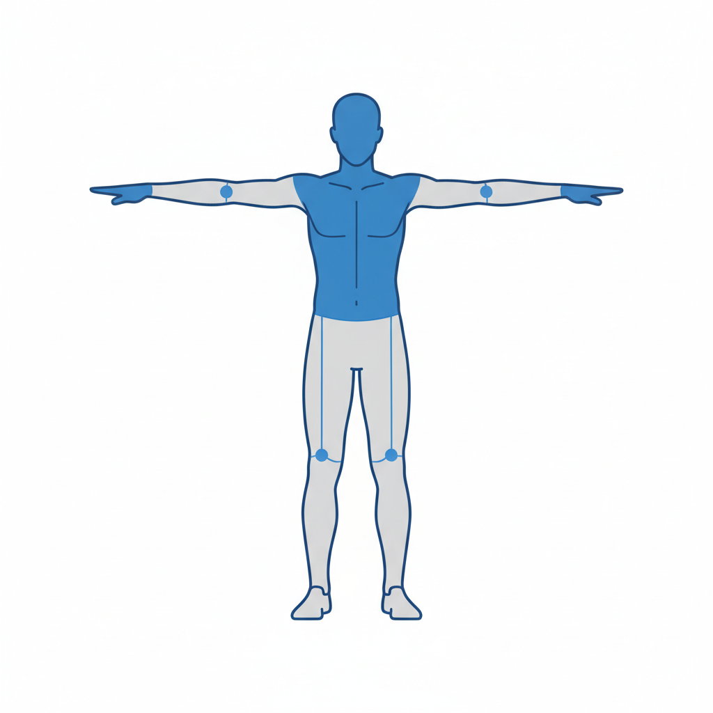
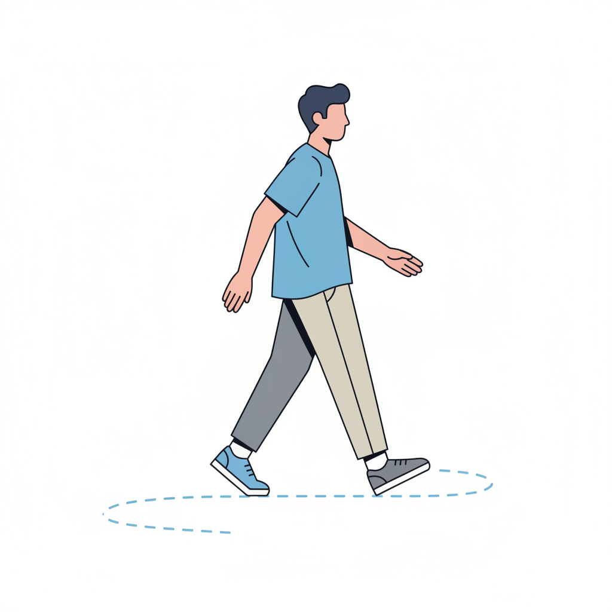
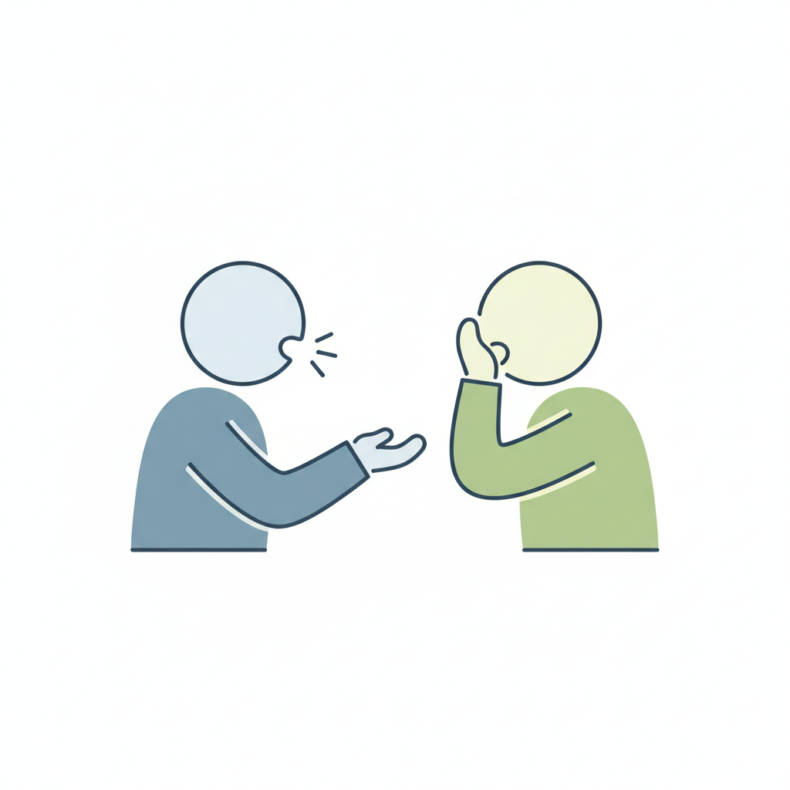
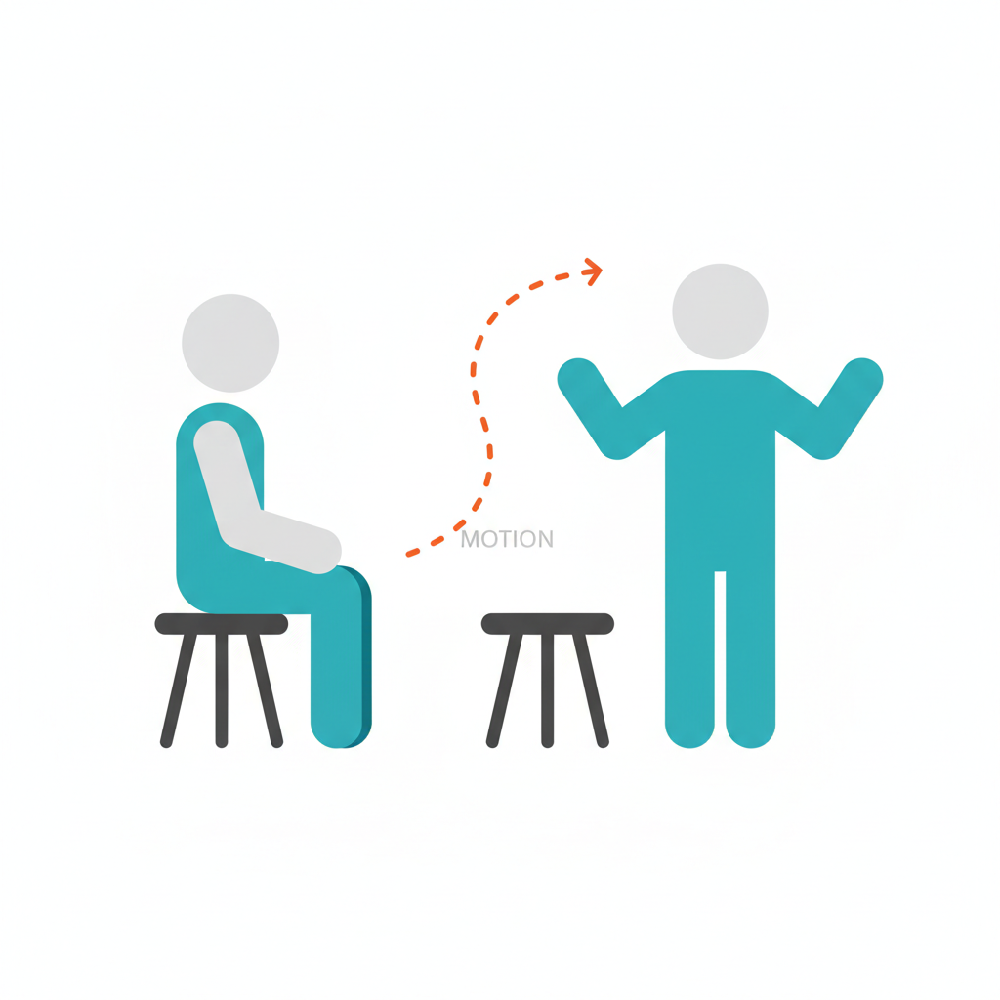
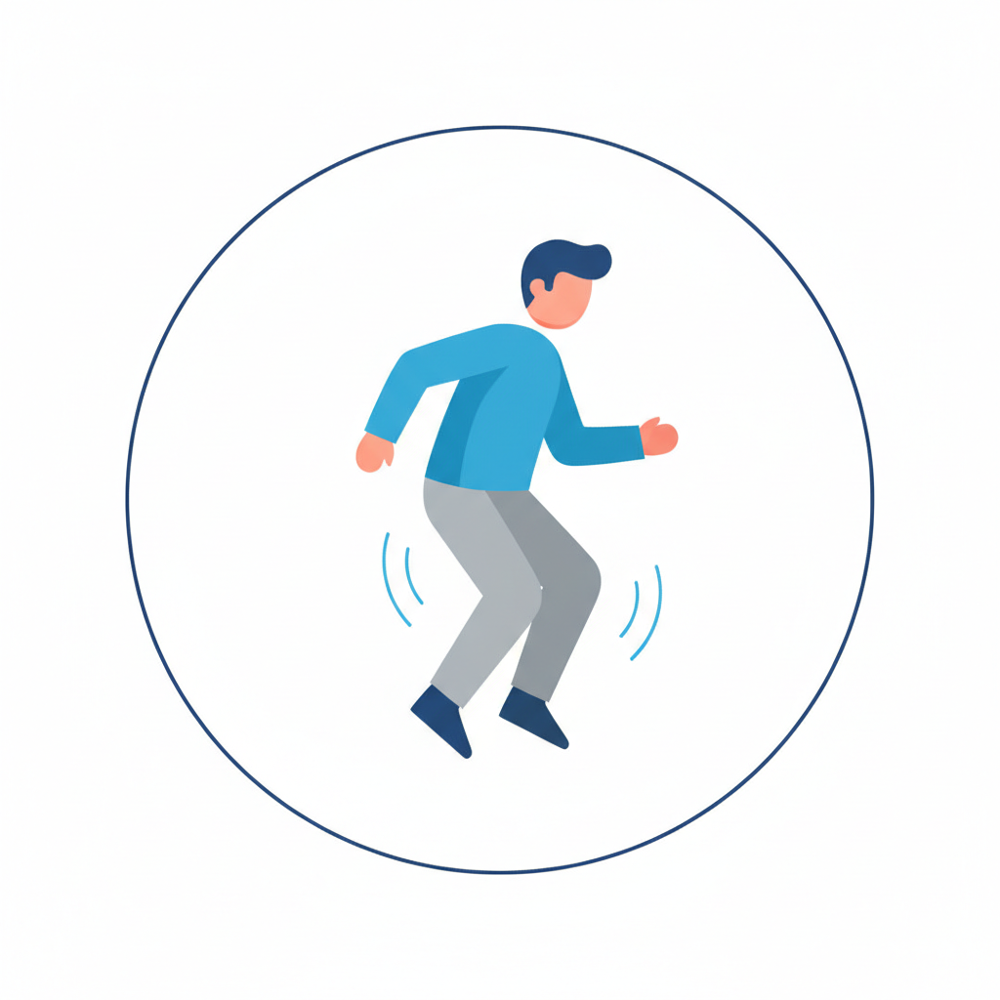
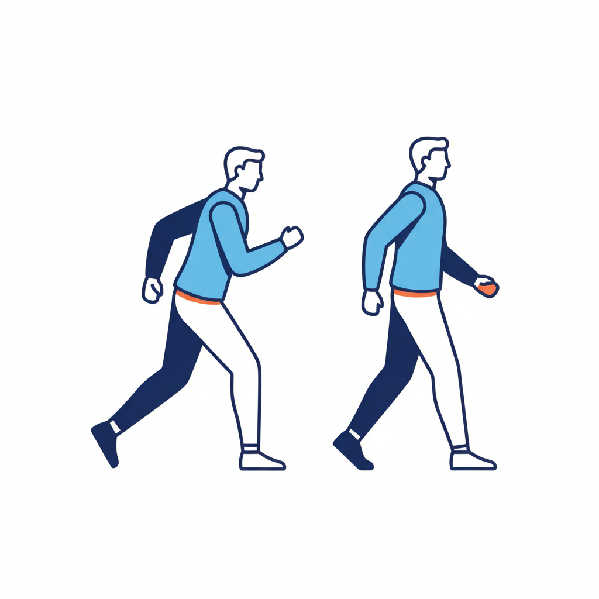

[쌤쌤] 데이터 촬영 동작 가이드 (참가자용)
총 8가지 동작 안내 (소요시간 약 13분) | 일상 습관 그대로 편안하게 움직여 주세요!
📢 핵심 원칙:
정답이나 멋진 자세는 없습니다. 의식해서 예쁘게 하려 하지 마시고 평소 하시는 방식대로 편하게 움직여 주세요!
※ 1~5번 동작은 첫 회 폐기 (총 4회 중 3회 사용)
M00
기준 골격 등록 (캘리브레이션)
⏱️ 15초 · 1회

"양팔 벌려 5초, 팔 내리고 편하게 10초"
팔을 양옆으로 벌려 T자 포즈를 5초간 유지한 뒤, 팔을 내리고 편안한 차렷 자세로 10초간 가만히 정지합니다.
※ 신체 기준 치수 측정을 위해 흔들림 없이 서 주세요.
M01
자연스럽게 걷기
⏱️ 10초 · 4회

"저기 표시된 곳까지 편하게 걸어가세요"
바닥에 표시된 6m 반환점까지 평소 걸음걸이대로 자연스럽게 걸어갔다가 돌아옵니다. (왕복 2회)
※ 팔 흔들기나 보폭을 일부러 조절하지 마세요.
M02
목표 점을 향해 손 뻗기
⏱️ 10초 · 4회
"벽의 점을 향해 손을 뻗었다 가져오세요"
벽면에 부착된 점 스티커를 향해 손을 뻗었다가 원래 자세로 가져옵니다. (3회 반복)
※ 왼손/오른손 선택과 뻗는 속도는 자유입니다.
M03
설명하며 말하기
⏱️ 20초 · 4회

"오늘 아침에 뭐 하셨는지 이야기해 주세요"
카메라가 아닌 진행자를 바라보고 편안하게 일상 대화를 합니다. (최근 본 영화, 오는 길 등)
※ 손 제스처를 억지로 쓰거나 참지 마세요.
M04
의자에 앉았다 일어서기
⏱️ 15초 · 4회

"의자에 앉았다 일어나기를 3번 해주세요"
등받이와 팔걸이가 없는 의자에 자연스럽게 앉았다가 일어납니다. (3회 반복)
※ 손으로 무릎을 짚거나 떼는 것 모두 자유입니다.
M05
제자리에서 가볍게 뛰기
⏱️ 10초 · 4회

"제자리에서 10초 정도 뛰어주세요"
바닥 위치에서 벗어나지 않고 제자리에서 가볍게 리듬을 타며 10초간 뜁니다.
※ 높이 뛰려 애쓰지 마시고 편한 강도로 뛰어주세요.
M06 + M07
조깅 & 지친 걷기 세트 (쉬지 않고 즉시 연결!)
⏱️ 각 10초 · 총 3세트 (전량 사용)

1단계 [M06 조깅]: "아까 걸으셨던 경로를 가볍게 뛰어서 갔다 오세요."
2단계 [M07 지친 걷기]: "네, 바로 이어서 다시 걸어서 갔다 와주세요!" (쉬지 않고 즉시)
가볍게 뛴 직후 숨이 차거나 피로한 상태의 진짜 걸음걸이를 측정하는 구간입니다.
⚠️
절대 주의:
"지친 척" 연기하지 마시고, 조깅 직후 실제 몸 상태 그대로 편안히 걸어주세요.